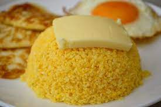

A comida típica do Nordeste vai te conquistar: conheça 5 pratos tradicionais
Uma das melhores partes de viajar é a imersão em outra cultura. Grandes diferenças podem ser observadas entre as regiões do país: sotaque, expressões, hábitos e gastronomia são alguns exemplos.
Afinal, quem nunca ouviu maravilhas sobre a comida típica do Nordeste?
Não há exagero na afirmação: a culinária nordestina realmente conquista os turistas que viajam em busca de praias paradisíacas e descobrem pratos deliciosos durante o passeio. A seguir, confira cinco comidas do Nordeste.
1. Acarajé
A melhor maneira de começar essa lista é com o famoso acarajé, muito consumido na Bahia. Ele é feito de massa de feijão-fradinho, cebola e sal, e passa por um processo de fritura no azeite de dendê — uma iguaria popular na culinária brasileira e africana. Para finalizar, ele pode ser servido com pimenta, camarão seco, vatapá, caruru ou salada.
Na Bahia, basta procurar as “baianas do Acarajé” para se deliciar com esse prato típico. No Costa do Sauípe, um dos melhores resorts all-inclusive do Nordeste, é possível aproveitar o seu acarajé perto da piscina, juntando boa culinária e diversão em um mesmo local.
2. Vatapá
O vatapá é um prato típico da culinária afro-brasileira. Ele é feito com farinha de rosca ou fubá, leite de coco, camarão, amendoim, pão, azeite de dendê, castanha-de-caju e pimenta.
Essa comida típica do Nordeste costuma ser servida de duas formas: com arroz ou como recheio de acarajé — ele é o creme amarelo que as baianas costumam colocar dentro do bolinho de feijão-fradinho.
comida tipica do nordeste
3. Baião de dois
Quem experimenta o baião de dois nordestino se apaixona. Não à toa, ele é um dos pratos mais solicitados pelos turistas. O prato surgiu no Ceará e contém arroz, feijão, carne seca e queijo coalho.
Diversos relatos afirmam que o prato foi criado em meio às dificuldades dos cearenses no período de seca: eles juntavam as sobras de arroz e feijão e acrescentavam a carne seca e o queijo no momento de cozinhar. Uma refeição simples, mas essencial.
4. Moqueca
Quem visita o litoral nordestino costuma experimentar pratos com frutos-do-mar, e a moqueca faz muito sucesso. Essa iguaria consiste, basicamente, em um cozido de peixe, que pode conter outros frutos-do-mar. O leite de coco e o azeite de dendê são ingredientes fundamentais da receita.
No Nordeste, o cozido é servido com pirão, arroz e farofa. Vale lembrar que a moqueca também é feita em outras regiões, como no Espírito Santo, e a principal diferença são os ingredientes de cada receita.
5. Cuscuz
O cuscuz é uma comida típica do Nordeste e está presente na alimentação diária dos nordestinos. O modo de preparo é simples: uma mistura de farinha de milho com sal que é levada ao vapor. Para incrementar a receita, algumas pessoas gostam de umedecer o cuscuz com leite de coco ou manteiga derretida.
Essa comida regional aparece em diferentes refeições. No almoço e na janta, o prato funciona como um substituto para o arroz. Nesse caso, o preparo inclui novos ingredientes: além da farinha do cuscuz, acrescenta-se verduras, calabresa ou bacon, criando uma espécie de farofa.